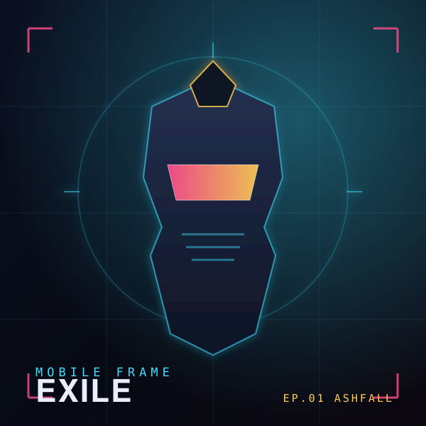

Episodes
tap to switchWays to listen
Same episode, different rides. Switch any time — feel the difference.
Transcript
tap a line to jumpWhat is this?
SPOKE turns anime into something you can listen to — on a bike, a run, a commute. Two shows ride here: Mobile Frame: EXILE, an original mecha drama written for this project so it’s free to share, rendered three ways; and Frame Theory, a commentary show where two hosts dig into landmark series like Mobile Suit Gundam and Dragon Ball Z — pure analysis in their own words, no clips. Every voice is neural text-to-speech; every explosion, thruster, comms crackle and the theme music is synthesized from scratch in code. No copyrighted audio is used.
Pure Cut
Dialogue + sound design, no narrator. Closest to watching with your eyes shut. Most immersive.
Audio-Described
A narrator paints the visuals between lines, like audio description for film. You’ll never lose the plot — best for a long ride.
Recap Hosts
Two hosts react and joke, with clips dropped in. Lightest, most fun, least faithful.
Want your own anime as a podcast? The pipeline that built this (script → cast of voices → sound design → three mixes) is in the repo. Point it at content you have the rights to and it renders the same three styles.